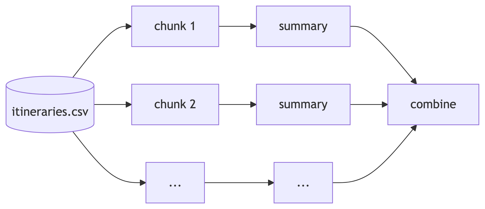

[1] "32.3 Kb"By the end of this lecture you will be able to:
tidyverse fail on itRFor the assessment
You won’t work with genuinely big data, or need DuckDB. You should be able to explain why large data cause problems, and how to change an approach as the data grow: chunking with map-reduce, or doing the work in a database (week 7).
“Big” is relative: it depends on your hardware and tools. What’s big for a laptop is routine for a cluster.
Task
Our flight prices file is 29 GB. A typical laptop has 16 GB of memory. What happens if we run read_csv("data/itineraries.csv")?
read_csv loads the whole file into memory as a tibble — and it doesn’t fit. R fails, or the computer slows to a crawl as it swaps memory to disk.
But we don’t need it all in memory to compute, say, a mean: we could read each value once, keep a running total and a count, and throw the value away.
| Resource | Speed | Size | Limits |
|---|---|---|---|
| Memory | very fast | 8–32 GB | what can be loaded |
| Storage | much slower | GBs – TBs | how fast data are read |
| Compute | — | cores | how fast we calculate |
The workflow runs as fast as its bottleneck. Big data work is trading them off: reading in chunks uses less memory, but takes longer.
Task
What limits each of these? How would you cope?
Before reaching for special tools:
[1] "32.3 Kb"A CSV must be read in full, even to get one column.
R, Python, Scala, JavaR on topR is often a layer on top of these tools, rather than the engine:
dbplyr — dplyr code run in a database (week 7)sparklyr — dplyr code run on a Spark clusterduckdb / duckplyr — a fast analytical database, in-processreadr::read_csv_chunked() — simple map-reduce in plain RDuckDB runs inside your R session, and can query a CSV file on disk without loading it.
Task
Compute the mean baseFare for each startingAirport, the usual way.
Error in `group_by()`:
! This operation cannot be carried out by DuckDB, and the input is a
stingy duckplyr frame.
• Try `summarise(.by = ...)` or `mutate(.by = ...)` instead of `group_by()` and
`ungroup()`.
ℹ Use `compute(prudence = "lavish")` to materialize to temporary storage and
continue with duckplyr.
ℹ See `vignette("prudence")` for other options..by# A duckplyr data frame: 2 variables
startingAirport mean_base_fare
<chr> <dbl>
1 OAK 466.
2 SFO 383.
3 JFK 329.
4 LAX 328.
5 IAD 322.
6 PHL 295.
# i more rowsThe whole query runs in DuckDB, streaming through the file; only the 16 rows of the result come back to R.
dbplyr<SQL>
SELECT startingAirport, AVG(baseFare) AS mean_base_fare
FROM (FROM 'data/itineraries.csv') q01
GROUP BY startingAirportExactly week 7 — a lazy table, translated to SQL — except the FROM names a CSV file. collect() would give the same 16 rows.

Only one chunk is in memory at a time.
Task
To find the mean body mass of the penguins, we split the data into chunks of 100 rows. Why not just average the four chunk means?
1 2 3 4
100 100 100 44 [1] 4139.497[1] 4201.754The chunks have different sizes, so their means can’t simply be averaged. Return a sum and a count from each chunk: those can be added up.
Rsummarise_chunk <- function(chunk, pos) { # map: one chunk
chunk |>
group_by(species) |>
summarise(sum_mass = sum(body_mass_g, na.rm = TRUE),
n = sum(!is.na(body_mass_g)), .groups = "drop")
}
results <- read_csv_chunked(
"data/penguins.csv",
callback = DataFrameCallback$new(summarise_chunk),
chunk_size = 100,
col_types = cols_only(species = col_character(),
body_mass_g = col_double())
)read_csv_chunked() reads 100 rows at a time and passes each chunk to summarise_chunk(), keeping only its small result.
# A tibble: 6 × 3
species sum_mass n
<chr> <dbl> <int>
1 Adelie 368225 99
2 Adelie 190575 52
3 Gentoo 241600 48
4 Chinstrap 88600 24
5 Gentoo 382750 75
6 Chinstrap 165250 44# A tibble: 3 × 2
species mean_mass
<chr> <dbl>
1 Adelie 3701.
2 Chinstrap 3733.
3 Gentoo 5076.Task
A file’s code column holds numbers for 15 rows, then codes like A1. We read it in chunks of 10 rows. What happens to the last five codes?
# A tibble: 6 × 2
id code
<dbl> <dbl>
1 15 15
2 16 NA
3 17 NA
4 18 NA
5 19 NA
6 20 NAColumn types are guessed from the first chunk only: code looks numeric, so later text becomes NA — silently. Always give col_types.
dbplyr), or into chunks (map-reduce), returning summaries that combine exactlyWe didn’t cover in detail:
dbplyr and collect()